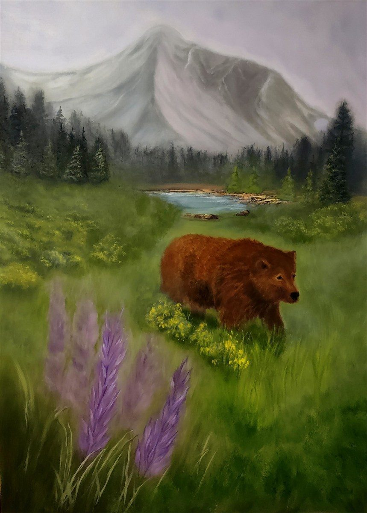

I paint the wild places I know by heart—Montana’s rivers, meadows, and the quiet edge of Glacier National Park. My work is about presence: the hush before a bear moves, the way mountains hold light, the stillness that lingers after the wind.
I work loose, letting paint capture mood and atmosphere more than detail. These are not just landscapes—they’re moments of belonging, shaped by the land I call home.
— Marnie Henry